정보처리기사(구) (2017-03-05 기출문제)
1과목: 데이터 베이스
1. 다음 관계대수 중 순수 관계연산자가 아닌 것은?
- 차집합(difference)
- 프로젝트(project)
- 조인(join)
- 디비전(division)
(정답률: 70%)

2. 다음 SQL문 실행결과는? (실제 시험에서는 전항 정답 처리 되었지만 확정답안 발표를 참고하여 문제를 적절히 수정하여 정상적으로 문제를 풀수 있도록 조치 하였습니다.)
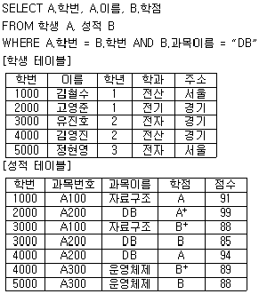
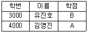
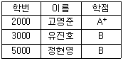
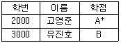
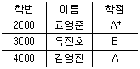
(정답률: 82%)
3. 로킹기법에서 2단계 로킹 규약에 대한 설명으로 옳은 것은?
- 트랜잭션은 lock만 수행할 수 있고, unlock은 수행할 수 없는 확장단계가 있다.
- 트랜잭션이 unlock과 lock을 동시에 수행할 수 있는 단계를 병렬전환 단계라 한다.
- 한 트랜잭션이 unlock 후 다른 데이터 아이템을 lock 할 수 있다.
- 교착상태를 일으키지 않는다.
(정답률: 45%)
4. E-R 모델에서 다중값 속성의 표기법은?
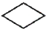
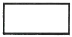
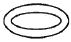
(정답률: 80%)
5. 데이터 모델의 종류 중 CODASYL DBTG 모델과 가장 밀접한 관계가 있는 것은?
- 계층형 데이터 모델
- 네트워크형 데이터 모델
- 관계형 데이터 모델
- 스키마형 데이터 모델
(정답률: 54%)
6. 릴레이션에 대한 설명으로 옳지 않은 것은?
- 모든 튜플은 서로 다른 값을 가지고 있다.
- 하나의 릴레이션에서 튜플은 순서를 가진다.
- 각 속성은 릴레이션 내에서 유일한 이름을 가진다.
- 모든 속성 값은 원자 값(atomic value)을 가진다.
(정답률: 79%)
7. 릴레이션에 R1에 속한 애튜리뷰트의 조합인 외래키를 변경하려면 이를 참조하고 있는 R2의 릴레이션의 기본키도 변경해야 하는데 이를 무엇이라 하는가?
- 정보 무결성
- 고유 무결성
- 키 제약성
- 참조 무결성
(정답률: 83%)
8. 깊이가 5인 이진 트리에서 가질 수 있는 최대 노드수는?
- 25
- 31
- 35
- 42
(정답률: 78%)
9. 퀵 정렬에 대한 설명으로 틀린 것은?
- 순환 알고리즘을 사용해야 하므로 스택공간을 필요로 한다.
- 첫 번째 키 만을 분할원소로 정할 수 있다.
- 키를 기준으로 작은 값은 왼쪽에, 큰 값은 오른쪽 서브파일로 분해시키는 방식이다.
- 최악의 시간 복잡도는 O(n2)이다.
(정답률: 46%)
10. 트랜잭션(Transaction)은 보통 일련의 연산 집합이란 의미로 사용하며 하나의 논리적 기능을 수행하는 작업의 단위이다. 트랜잭션이 가져야 할 특성으로 거리가 먼 것은?
- Atomicity
- Concurrency
- Isolation
- Durability
(정답률: 71%)
11. 뷰에 대한 설명으로 틀린 것은?
- 뷰에 대한 사용자의 권한을 제한할 수 있다.
- 뷰 테이블에 행이나 열을 추가할 때에는 ALTER 문을 사용하여야 한다.
- 뷰는 다른 뷰를 대상으로 설정될 수 있다.
- 뷰 테이블은 물리적으로 구현된 것은 아니다.
(정답률: 76%)
12. 다음 설명이 의미하는 것은?
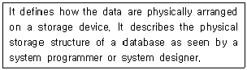
- Conceptual Schema
- External Schema
- Internal Schema
- Super Schema
(정답률: 64%)
13. 데이터베이스에서 개념적 설계 단계에 대한 설명으로 틀린 것은?
- 산출물로 ER-D가 만들어진다.
- DBMS에 독립적인 개념 스키마를 설계한다.
- 트랜잭션 인터페이스를 설계한다.
- 논리적 설계 단계의 앞 단계에서 수행된다.
(정답률: 60%)
14. 시스템 카탈로그에 대한 설명으로 틀린 것은?
- 데이터베이스에 포함된 다양한 데이터 객체에 대한 정보들을 유지, 관리하기 위한 시스템 데이터베이스이다.
- 시스템 카탈로그를 데이터 사전이라고도 한다.
- 시스템 카탈로그에 저장된 정보를 메타 데이터라고도 한다.
- 시스템 카탈로그는 시스템을 위한 정보를 포함하는 시스템 데이터베이스이므로 일반 사용자는 내용을 검색할 수 없다.
(정답률: 82%)
15. 후위 표기식이 다음과 같을 때 연산 결과는? (실제 시험에서는 전항 정답 처리 되었지만 확정답안 발표를 참고하여 문제를 적절히 수정하여 정상적으로 문제를 풀수 있도록 조치 하였습니다.)
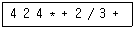
- 6
- 9
- 12
- 16
(정답률: 68%)
16. Which of the following does not belong to the DML statement of SQL?
- SELECT
- DELETE
- CREATE
- INSERT
(정답률: 79%)
17. 다음과 같이 오름차순 정렬되었을 경우 사용된 정렬 기법은?
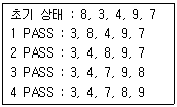
- bubble sort
- selection sort
- quick sort
- shell sort
(정답률: 76%)
18. 다음 그래프의 인접 행렬(Adjacency Matrix) 표현시 옳은 것은?
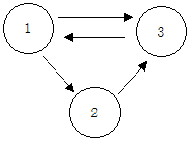
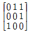
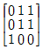
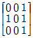
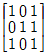
(정답률: 70%)
19. Commit과 Rollback 명령어에 의해 보장 받는 트랜잭션의 특성은?
- 병행성
- 보안성
- 원자성
- 로그
(정답률: 63%)
20. 해싱에서 충돌이 일어난 자리에서 그 다음 버킷들을 차례로 하나씩 검색하여 최초로 나오는 빈 버킷에 해당 데이터를 저장하는 방법은?
- 선형 개방 주소법
- 재해싱
- 임의 조사법
- 이차 조사법
(정답률: 49%)
2과목: 전자 계산기 구조
21. 프로그램 상태 워드(program status word)에 대한 설명으로 가장 타당한 것은?
- 시스템의 동작은 CPU 안에 있는 program counter에 의해 제어된다.
- interrupt 레지스터는 PSW의 일종이다.
- CPU의 상태를 나타내는 정보를 가지고, 독립된 레지스터로 구성된다.
- PSW는 8bit의 크기이다.
(정답률: 42%)
22. cache memory에 대한 설명과 가장 관계가 깊은 것은?
- 내용에 의해서 access되는 memory unit이다.
- 대형 computer system에서만 사용되는 개념이다.
- 중앙처리장치가 자주 접근하거나 최근에 접근한 메모리 블록을 저장하는 초고속 기억장치이다.
- memory에 접근을 각 module별로 액세스 하도록 하는 기억장치이다.
(정답률: 63%)
23. 제어장치의 기능에 대한 설명으로 가장 옳지 않은 것은?
- 입력장치의 내용을 기억장치에 기록한다.
- 기억장치의 내용을 연산장치에 옮긴다.
- 가상메모리에 있는 프로그램을 해독한다.
- 기억장치의 내용을 출력장치에 옮긴다.
(정답률: 60%)
24. 인터럽트의 요청이 있을 경우에 처리하는 내용 중 가장 관계 없는 것은?
- 중앙처리장치는 인터럽트를 요구한 장치를 확인하기 위하여 입출력장치를 폴링한다.
- PSW(Program Status Word)에 현재의 상태를 보관한다.
- 인터럽트 서비스 프로그램은 실행하는 중간에는 다른 인터럽트를 처리할 수 없다.
- 인터럽트를 요구한 장치를 위한 인터럽트 서비스 프로그램을 실행한다.
(정답률: 52%)
25. 캐시의 쓰기 정책 중 write-through 방식의 단점은?
- 쓰기 동작에 걸리는 시간이 길다.
- 읽기 동작에 걸리는 시간이 길다.
- 하드웨어가 복잡하다.
- 주기억장치의 내용이 무효상태인 경우가 있다.
(정답률: 50%)
26. 인터럽트의 발생 원인으로 가장 옳지 않은 것은?
- 일방적인 인스트럭션 수행
- 수퍼바이저 콜
- 정전이나 자료 전달의 오류 발생
- 전압의 변화나 온도 변화
(정답률: 52%)
27. 다음의 마이크로 오퍼레이션과 가장 관련 있는 것은?(단, EAC : 끝자리 올림과 누산기를 의미)
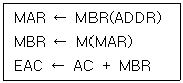
- AND
- ADD
- JMP
- BSA
(정답률: 63%)
28. 우선순위 중재 방식 중 중재동작이 끝날 때마다 모든 마스터들의 우선순위가 한 단계씩 낮아지고, 가장 우선순위가 낮았던 마스터가 최상위 우선순위를 가지는 방식은?
- 회전우선순위
- 임의우선순위
- 동등우선순위
- 최소-최근 사용 우선순위
(정답률: 63%)
29. 다음의 그림은 병렬 가산기(parallel adder)의 입력과 출력을 나타낸 것이다. 음수 표현을 위해 2의 보수(2‘s complement)를 사용한다고 할 경우 그림은 어떤 연산 수행을 위한 것인가?
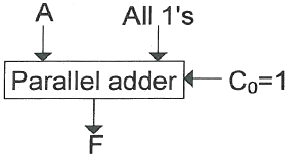
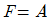
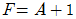
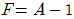
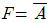
(정답률: 31%)
30. 컴퓨터에서 사용하는 마이크로명령어를 기능별로 분류할 때 동일한 분류에 포함되지 않는 것은?
- JMP(Jump 명령)
- ADD(Addition 명령)
- ROL(Rotate Left 명령)
- CLC(Clear Carry 명령)
(정답률: 38%)
31. CAM(Content Addressable Memory)의 특징으로 가장 옳은 것은?
- 주 메모리에 비해 상대적으로 값이 싸다.
- 구조 및 동작이 간단하다.
- 명령어를 순서대로 기억시킨다.
- 저장된 내용의 일부를 이용하여 정보의 위치를 검색한다.
(정답률: 60%)
32. 인스트럭션 수행을 위한 메이저 상태를 설명한 것으로 가장 옳은 것은?
- execute 상태는 간접주소지정 방식의 경우에만 수행된다.
- 명령어를 기억 장치 내에서 가져오기 위한 동작을 fetch라 한다.
- CPU의 현재 상태를 보관하기 위한 기억장치접근을 indirect 상태라 한다.
- 명령어 종류를 판별하는 것을 indirect 상태라 한다.
(정답률: 57%)
33. 명령어 인출(IF), 명령어 해독(ID), 오퍼랜드인출(OF), 실행(EX)의 순서로 실행되고, 각 단계에 걸리는 시간이 같은 4단계 명령어 파이프라인에 인가되는 클록 주파수가 1 GHz 일 때, 20개의 명령어를 실행하는데 걸리는 시간은?
- 20 ns
- 21 ns
- 22 ns
- 23 ns
(정답률: 31%)
34. 부호를 나타내지 않은 양의 수에 대한 산술적 시프트를 한 경우에 대한 설명으로 가장 옳지 않은 것은?
- 왼쪽으로 시프트시 밀려나는 비트가 1 이면 절단 현상이 발생한다.
- 시프트시 새로 들어오는 비트는 0 이다.
- 오른쪽으로 1번 시프트하면 2로 나눈 것과 같다.
- 왼쪽으로 1번 시프트하면 2배한 것과 같다.
(정답률: 47%)
35. RAM에 관한 설명으로 가장 타당하지 않은 것은?
- DRAM은 캐패시터에 전하를 저장하는 방식으로 데이터를 저장한다.
- SRAM은 플립플롭을 사용해 데이터를 저장하기 때문에 방전 현상이 나타난다.
- DRAM은 상대적으로 소비전력이 적으며 대용량 메모리 제조에 적합하다.
- SRAM은 캐시메모리로 주로 사용된다.
(정답률: 49%)
36. 다음 논리회로에 관한 설명 중 가장 옳지 않은 것은?
- 조합 논리회로는 입력과 출력을 가진 논리게이트의 집합으로 기억 기능이 없다.
- 순차 논리회로는 입력과 논리회로의 현재 상태에 의해 출력이 결정되는 회로이다.
- 멀티플렉서는 여러 개의 입력선 중 하나의 입력선만 출력에 전달하는 조합논리회로이다.
- 전 가산기는 세 개의 입력들과 두 개의 출력들을 가진 순서논리회로이다.
(정답률: 37%)
37. 하드웨어 신호에 의하여 특정번지의 서브루틴을 수행하는 것은?
- vectored interrupt
- handshaking mode
- subroutine call
- DMA 방식
(정답률: 40%)
38. 병렬처리와 가장 관계없는 것은?
- Array Processor
- Multiple phase clock
- Vector Processor
- Pipeline Processing
(정답률: 32%)
39. 고선명(HD) 비디오 데이터를 저장하기 위해 짧은 파장(4⑤나노미터)을 갖는 레이저를 사용하는 광 기록방식 저장매체는?
- Blu-ray 디스크
- CD
- DVD
- 플래시 메모리
(정답률: 64%)
40. 정수 n bit를 사용하여 1의 보수(1‘s complement)로 표현하였을 때 그 값의 범위는?
- -(2n-1-1) ~ 2n-1-1
- -2n-1 ~ 2n-1-1
- -2n ~ 2n-1
- -2n-1 ~ 2n-1-1
(정답률: 37%)
3과목: 운영체제
41. 다음 표와 같이 작업이 제출되었을 때, 라운드로빈 정책을 사용하여 스케줄링 할 경우 평균 반환시간을 계산한 결과로 옳은 것은?(단, 작업할당 시간은 4시간으로 한다.)
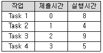
- 6.5
- 9.25
- 11.75
- 18.25
(정답률: 45%)
42. 다음 중 암호화 기법이 아닌 것은?
- DES
- MALLOC
- Public Key System
- RSA
(정답률: 66%)
43. 사용자가 요청한 디스크 입, 출력 내용이 다음과 같은 순서로 큐에 들어 있다. 이 때 SSTF 스케쥴링을 사용한 경우의 처리 순서는?(단, 현재 헤드 위치는 53 이고, 제일 안쪽이 1번, 바깥쪽이 200번 트랙이다.
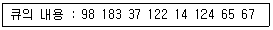
- 53-65-67-37-14-98-122-124-183
- 53-98-183-37-122-14-124-65-67
- 53-37-14-65-67-98-122-124-183
- 53-67-65-124-14-122-37-183-98
(정답률: 64%)
44. 다음 중 시스템 소프트웨어가 아닌 것은?
- Compiler
- Flash
- Linker
- Loader
(정답률: 66%)
45. 다음과 같은 형태로 임계 구역의 접근을 제어하는 상호배제 기법은?
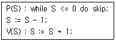
- Dekker Algorithm
- Lamport Algorithm
- Peterson Algorithm
- Semaphore
(정답률: 54%)
46. 다중 처리기 운영체제 구성에서 주/종(Master/Slave)처리기 시스템에 대한 설명으로 가장 옳지 않은 것은?
- 주 프로세서는 입/출력과 연산을 담당한다.
- 종 프로세서는 입/출력 위주의 작업을 처리한다.
- 주 프로세서만이 운영체제를 수행한다.
- 주 프로세서에 문제가 발생하면 전체 시스템이 멈춘다.
(정답률: 55%)
47. 디스크 스케줄링에서 SCAN기법을 사용할 경우, 다음과 같은 작업 대기 큐의 작업들을 수행하기 위한 헤드의 총 트랙 이동 거리는?(단, 초기 헤드의 위치는 30이고, 현재 0번 트랙으로 이동 중이다.)
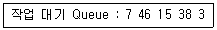
- 39
- 59
- 70
- 151
(정답률: 48%)
48. 하나의 루트 디렉터리와 여러 개의 서브 디렉터리로 구성되어 있으며 각 디렉터리의 생성 및 삭제가 용이하며 MS-DOS, Unix, MS-Windows 운영체제에서 사용하고 있는 디렉터리 구조는?
- 1단계 디렉터리
- 2단계 디렉터리
- 비순환 그래프 디렉터리
- 트리 구조 디렉터리
(정답률: 71%)
49. 기계어와 비교하여 어셈블리 언어가 갖는 장점이 아닌 것은?
- 기계어로의 번역과정이 불필요하다.
- 프로그램을 읽고 이해하기 쉽다.
- 프로그램의 주소가 기호 번지이다.
- 프로그램에 데이터를 사용하기 쉽다.
(정답률: 57%)
50. 준비상태에 있는 프로세스 중에서 실행될 프로세스를 선정하여 CPU에 할당하는 것은?
- Job scheduler
- Process Scheduler
- Spooler
- Traffic Controller
(정답률: 54%)
51. Virtual Memory의 Page Replacement 알고리즘이 아닌 것은?
- FIFO
- LRU
- SSTF
- LFU
(정답률: 57%)
52. 다음 설명에 해당하는 운영체제 성능평가 기준은?
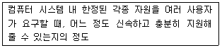
- Availability
- Reliability
- Throughput
- Turn-around Time
(정답률: 65%)
53. UNIX의 시스템 콜(call) 중에서 새로운 프로세스를 생성시키는데 사용하는 것은?
- exec
- fork
- creat
- dup
(정답률: 60%)
54. 공유 메모리를 사용하는 병렬 프로세스들의 상호배제를 위한 요구조건이 아닌 것은?
- 자원들은 이용 가능한 자원 풀(pool)로부터 프로세서에 의해 요구되고 할당된다.
- 두 개 이상의 프로세스들이 동시에 임계영역에 있어서는 안 된다.
- 어떤 프로세스도 임계구역으로 들어가는 것이 무한정 연기되어서는 안 된다.
- 임계구역 바깥에 있는 프로세스가 다른 프로세스의 임계구역 진입을 막아서는 안 된다.
(정답률: 33%)
55. UNIX에서 실행명령의 백그라운드(Background) 처리를 위해 명령어의 끝에 입력하는 기호는?
- @
- #
- &
- %
(정답률: 54%)
56. 워킹 셋(working set)에 대한 설명으로 옳지 않은 것은?
- 주기억장치에 적재되지 않으면 스레싱이 발생할 수 있다.
- 실행 중인 프로세스가 일정 시간 동안 참조하는 페이지의 집합이다.
- 주기억장치에 적재되어야 효율적인 실행이 가능하다.
- 프로세스 실행 중에는 크기가 변하지 않는다.
(정답률: 62%)
57. 정상적인 데이터에 여분의 거짓 데이터를 삽입하여 불법적으로 데이터를 분석하는 공격을 방어할 수 있는 기법은?
- Digital Signature Mechanism
- Traffic Padding Mechanism
- Authentication Exchange Mechanism
- Access Control Mechanism
(정답률: 54%)
58. UNIX 시스템에서 사용자와 운영체제 서비스를 연결해 주는 인터페이스로 상위수준의 소프트웨어가 커널의 기능을 이용할 수 있도록 지원해주는 것은?
- 시스템 호출
- 하드웨어 제어 루틴
- 프로세스 제어 서브 시스템
- 파일 서브 시스템
(정답률: 43%)
59. 다음 중 분산처리 시스템을 프로세스 모델에 따라서 분류하였을 경우에 해당되지 않는 것은?
- 클라이언트-서버 모델
- 다중 접근 버스 모델
- 프로세서 풀 모델
- 혼합 모델
(정답률: 31%)
60. 4개의 페이지를 수용할 수 있는 주기억장치가 있으며, 초기에는 모두 비어 있다고 가정한다. 다음의 순서로 페이지 참조가 발생할 때, FIFO 페이지 교체 알고리즘을 사용할 경우 페이지 결함의 발생 횟수는?
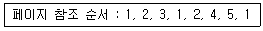
- 6회
- 7회
- 8회
- 9회
(정답률: 67%)
4과목: 소프트웨어 공학
61. 데이터 흐름도(DFD)의 구성요소에 포함되지 않는 것은?
- data flow
- data dictionary
- process
- data store
(정답률: 58%)
62. 블랙박스 테스트 기법에 해당하는 내용을 모두 고르면?
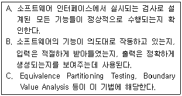
- A
- A, C
- B, C
- A, B, C
(정답률: 59%)
63. 소프트웨어 재사용과 관련하여 객체들의 모임, 대규모 재사용 단위로 정의되는 것은?
- Component
- Sheet
- Framework
- Cell
(정답률: 58%)
64. 다수의 사용자를 제한되지 않은 환경에서 프로그램을 사용하게 하고 오류가 발견되면 개발자에게 통보하는 방식의 검사(test) 방법은?
- alpha test
- beta test
- configuration test
- unit test
(정답률: 67%)
65. 소프트웨어 품질 보증을 위한 정형 기술 검토의 지침 사항으로 옳지 않은 것은?
- 각 체크 리스트를 작성하고, 자원과 시간 일정을 할당한다.
- 검토의 과정과 결과를 재검토한다.
- 논쟁과 반박을 제한한다.
- 의제와 참가자의 수를 제한하지 않는다.
(정답률: 72%)
66. 객체 지향 설계 및 분석단계에 대한 설명으로 틀린 것은?
- 분석 단계에서는 주어진 문제 안에서 객체들을 발견하고 객체들의 상관관계를 분석한다.
- 분석 설계 및 구현 단계들 사이에 의미적 갭(semantic gap)이 크다.
- 설계 단계에서는 객체들을 클래스로 정의하고 상관관계를 상속단계로 정의한다.
- 구현단계에서는 정의된 클래스들에 대해 특정언어를 이용하여 1:1로 정의한다.
(정답률: 50%)
67. User Interface 설계 시 오류 메시지나 경고에 관한 지침으로 가장 옳지 않은 것은?
- 메시지는 이해하기 쉬워야 한다.
- 오류로부터 회복을 위한 구체적인 설명이 제공되어야 한다.
- 오류로 인해 발생 될 수 있는 부정적인 내용은 가급적 피한다.
- 소리나 색 등을 이용하여 듣거나 보기 쉽게 의미 전달을 하도록 한다.
(정답률: 76%)
68. 하향식 통합 테스트 수행을 위해 일시적으로 필요한 조건만을 가지고 임시로 제공되는 시험용 모듈의 명칭은?
- alpha
- builder
- cluster
- stub
(정답률: 58%)
69. 소프트웨어 역공학(Software reverse engineering)에 대한 설명으로 가장 옳지 않은 것은?
- 기존 소프트웨어의 구성 요소와 그 관계를 파악하여 설계도를 추출한다.
- 역공학의 가장 간단하고 오래된 형태는 재문서화라고 할 수 있다.
- 일반적인 개발 단계와는 반대 방향으로 기존 코드를 복구하는 방법이다.
- 대상 시스템 없이 새로운 시스템으로 개선하는 변경 작업이다.
(정답률: 70%)
70. 소프트웨어, 하드웨어, 데이터베이스, 테스트 등을 통합하여 소프트웨어를 개발하는 환경을 조성한다는 의미를 가진 용어는?
- CAD
- CAI
- CAM
- CASE
(정답률: 71%)
71. 프로그램 설계도의 하나인 NS(Nassi-Schneiderman) Chart에 대한 설명으로 가장 옳지 않은 것은?
- 논리의 기술에 중점을 두고 도형을 이용한 표현 방법이다.
- 박스, 다이아몬드, 화살표 등의 기호를 사용하므로 읽고 작성하기가 매우 쉽다.
- 이해하기 쉽고 코드로 변환이 용이하다.
- 연속, 선택, 반복 등의 제어 논리 구조를 표현한다.
(정답률: 57%)
72. 객체지향의 캡슐화에 대한 설명으로 가장 옳지 않은 것은?
- 결합도가 낮아진다.
- 재사용이 용이하다.
- 인터페이스를 단순화 시킬 수 있다.
- 변경이 발생할 때 오류의 파급효과가 크다.
(정답률: 68%)
73. 자료 사전에서 기호 “ { } ”의 의미는?
- 정의
- 생략
- 반복
- 선택
(정답률: 70%)
74. 컴포넌트 재사용을 위한 컴포넌트 기반 개발 활동에 대한 설명으로 가장 옳지 않은 것은?
- 후보 컴포넌트가 요구되는 기능을 수행하는지를 조사하기 위해 컴포넌트 검증을 수행한다.
- 컴포넌트의 내부 처리 과정을 조사하고 코드를 수정하기 위해 블랙-박스 랩핑(Wrapping)을 적용한다.
- 컴포넌트 라이브러리가 컴포넌트 확장 언어를 제공하면 그레이-박스 랩핑을 적용할 수 있다.
- 어플리케이션 구현을 위해 검증, 개작, 개발된 컴포넌트들을 조립하는 컴포넌트 합성을 수행한다.
(정답률: 48%)
75. COCOMO model 중 기관 내부에서 개발된 중소 규모의 소프트웨어로 일괄 자료 처리나 과학기술 계산용, 비즈니스 자료 처리용으로 5만 라인 이하의 소프트웨어를 개발하는 유형은?
- embeded
- organic
- semi-detached
- semi-embeded
(정답률: 56%)
76. Rumbaugh의 모델링에서 상태도와 자료흐름도는 각각 어떤 모델링과 가장 관련이 있는가?
- 상태도 – 동적 모델링, 자료흐름도 – 기능 모델링
- 상태도 – 기능 모델링, 자료흐름도 – 동적 모델링
- 상태도 – 객체 모델링, 자료흐름도 – 기능 모델링
- 상태도 – 객체 모델링, 자료흐름도 – 동적 모델링
(정답률: 53%)
77. COCOMO 모델에 의한 비용(cost) 산정 과정에 해당하지 않는 것은?
- KDSI (or KLOC)를 측정한다.
- UFP(Unadhusted function point)를 계산한다.
- 개발 노력 승수(Development effort multifliers)를 결정한다.
- 비용 산정 유형으로 단순형, 중간형, 임베디드형이 있다.
(정답률: 42%)
78. 실시간 소프트웨어 설계 시 고려해야 할 사항이 아닌 것은?
- 인터럽트와 문맥 교환의 표현
- 태스크들간의 통신과 동기화
- 동기적인 프로세싱
- 타이밍 제약의 표현
(정답률: 45%)
79. 위험 모니터링(monitoring)의 의미로 가장 옳은 것은?
- 위험을 이해하는 것
- 위험 요소를 인정하지 않는 것
- 첫 번째 조치로 위험을 피할 수 있도록 하는 것
- 위험 요소 징후들을 계속적으로 인지하는 것
(정답률: 75%)
80. 소프트웨어 공학에 대한 설명으로 가장 거리가 먼 것은?
- 소프트웨어의 개발, 운용, 유지보수, 폐기처분에 대한 체계적인 접근방법이다.
- 정해진 비용과 기간 내에 소프트웨어를 체계적으로 생산하고 유지ㆍ보수하는데 관련된 기술적이고 관리적인 접근방법이다.
- 소프트웨어 공학은 안정적이며 효율적으로 작동하는 소프트웨어를 생산하고, 유지ㆍ보수 활동을 체계적이고 경제적으로 수행하기 위해 계층화 기술을 사용한다.
- 소프트웨어 공학의 궁극적 목표는 가능한 빠른 시일 내에 독창적인 소프트웨어를 개발하는 것이다.
(정답률: 75%)
5과목: 데이터 통신
81. HDLC의 프레임(Frame)의 구조가 순서대로 올바르게 나열된 것은?(단, A: Address, F: Flag, C: Control, D: Data, S: Frame Check Sequence)
- F-D-C-A-S-F
- F-C-D-S-A-F
- F-A-C-D-S-F
- F-A-D-C-S-F
(정답률: 58%)
82. 패킷 교환 방식에 대한 설명으로 틀린 것은?
- 데이터그램과 가상회선방식이 있다.
- 메시지를 1개 복사하여 여러 노드로 전송하는 방식이다.
- 가상회선방식은 연결 지향 서비스라고도 한다.
- 축적 교환이 가능하다.
(정답률: 47%)
83. 다중접속방식 중 CDMA 방식에 대한 특징으로 틀린 것은?
- 시스템의 포화 상태로 인한 통화 단절 및 혼선이 적다.
- 실내 또는 실외에서 넓은 서비스 권역을 제공한다.
- 배경 잡음을 방지하고 감쇄시킴으로써 우수한 통화 품질을 제공한다.
- 산악 지형 또는 혼잡한 도심 지역에서는 품질이 떨어진다.
(정답률: 57%)
84. IP계층의 프로토콜에 해당되지 않는 것은?
- PMA
- ICMP
- ARP
- IP
(정답률: 55%)
85. 연속적인 신호파형에서 최고주파수가 W(Hz)일 때 나이키스트 표본화 주기(T)는?
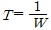
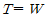
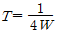
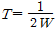
(정답률: 57%)
86. 패킷화 기능이 없는 일반형 터미널에 접속하여 패킷의 조립과 분해 기능을 대신해 주는 장치는?
- DTE
- PS
- PAD
- PMAX
(정답률: 61%)
87. IPv4에서 IPv6로의 천이 전략 중 캡슐화 및 역캡슐화를 사용하는 것은?
- Dual Stack
- Header translation
- Map Address
- Tunneling
(정답률: 59%)
88. 전진에러수정(FEC) 코드에 대한 설명으로 틀린 것은?
- FEC 코드의 종류로 CRC 코드 등이 있다.
- 에러 정정기능을 포함한다.
- 연속적인 데이터 전송이 가능하다.
- 역채널을 사용한다.
(정답률: 48%)
89. 광대역통합네트워크에서 VoIP 서비스를 제공하기 위한 프로토콜이 아닌 것은?
- SIP
- R2 CAS
- H.323
- Megaco
(정답률: 32%)
90. 인터넷 망(IP Network)과 유선 전화망(PSTN)간을 상호 연동시키는데 사용되는 시그널링 프로토콜은?
- ISDN
- R2 CAS
- H.323
- SIGTRAN
(정답률: 35%)
91. 회선교환 방식에 대한 설명으로 틀린 것은?
- 고정된 대역폭으로 데이터 전송
- 회선이 설정되어 통신이 완료될 때까지 회선을 물리적으로 접속
- 수신노드에서 패킷을 재순서화하는 과정 필요
- 실시간 대화용에 적합
(정답률: 42%)
92. 호스트의 물리 주소를 통하여 논리 주소인 IP 주소를 얻어오기 위해 사용되는 프로토콜은?
- ICMP
- IGMP
- ARP
- RARP
(정답률: 53%)
93. Hamming코드에서 총 전송비트수가 17비트 일 때, 해밍 비트수와 순수한 정보 비트수는?
- 해밍 비트수 : 4 , 정보 비트수 : 13
- 해밍 비트수 : 5 , 정보 비트수 : 12
- 해밍 비트수 : 6 , 정보 비트수 : 11
- 해밍 비트수 : 7 , 정보 비트수 : 10
(정답률: 44%)
94. 프로토콜의 기본적인 요소로 볼 수 없는 것은?
- 구문(Syntax)
- 타이밍(Timing)
- 처리(Processing)
- 의미(Semantics)
(정답률: 50%)
95. 192.168.1.0/24 네트워크를 FLSM 방식을 이용하여 6개의 subnet으로 나누고 ip subnet-zero를 적용했다. 이 때 subnetting된 네트워크 중 5번째 네트워크의 2번째 사용 가능한 IP주소는?
- 192.168.1.255
- 192.168.0.129
- 192.168.1.130
- 192.168.1.64
(정답률: 32%)
96. QPSK 변조방식의 대역폭 효율은 몇 [bps/Hz]인가?
- 1
- 2
- 4
- 8
(정답률: 35%)
97. 8진 PSK 변조방식에서 변조속도가 2400(baud) 일 때 정보 신호의 속도는 몇 (bits/s)인가?
- 7200
- 4800
- 2400
- 800
(정답률: 68%)
98. X.25 프로토콜을 구성하는 계층에 해당하지 않는 것은?
- 물리계층
- 링크계층
- 논리계층
- 패킷계층
(정답률: 51%)
99. 아날로그 데이터를 아날로그 신호로 변환하는 변조방식이 아닌 것은?
- AM
- TM
- FM
- PM
(정답률: 59%)
100. OSI 7계층에서 단말기 사이에 오류 수정과 흐름제어를 수행하여 신뢰성 있고 명확한 데이터를 전달하는 계층은?
- 전송 계층
- 응용 계층
- 세션 계층
- 표현 계층
(정답률: 64%)
차집합은 두 개의 릴레이션에서 첫 번째 릴레이션에는 속하지만 두 번째 릴레이션에는 속하지 않는 튜플들로 이루어진 새로운 릴레이션을 반환하는 연산자입니다. 이는 두 개의 릴레이션 간의 비교를 위한 연산자로, 순수한 릴레이션 연산자는 아닙니다.
반면, 프로젝트, 조인, 디비전은 모두 순수한 릴레이션 연산자입니다. 프로젝트는 릴레이션에서 특정 속성들만 선택하여 새로운 릴레이션을 만드는 연산자이고, 조인은 두 개의 릴레이션에서 공통 속성을 기준으로 두 테이블을 합치는 연산자입니다. 디비전은 두 개의 릴레이션에서 첫 번째 릴레이션의 모든 튜플이 두 번째 릴레이션의 모든 튜플과 매칭되는 경우에만 새로운 릴레이션을 반환하는 연산자입니다.